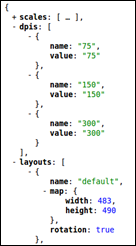

MapFish Print Module for IIS¶
- date:
2010-11-10 16:42
- author:
amercader
- category:
mapfish, web development
- tags:
printing java pylons github amercader
- slug:
mapfish-print-module-for-iis
- status:
published
 This is a guest post by `Adrià Mercader <http://amercader.net/>`__.
{kind=link}
Even in the current digital era, being able to print maps from geospatial applications is still a very commonly requested feature. Traditionally, there have been two main approaches to the map printing on browser applications: handling it either on the client or on the server. In the first case, a new page is opened with the suitable size for a common paper format (e.g. A4 portrait) and is printed with the browser’s print function. This is probably the easiest way to go if you have a very basic map and you don’t need a complex layout, and big guys like Google Maps do it this way. The second option is based on sending all necessary information to a remote printing service, which will produce an output file (generally a PDF) ready to be printed. This allows for more complex layouts, different page sizes, etc. but with the drawback of being more difficult to build and maintain.
Fortunately though, the MapFish mapping framework includes a powerful printing module that allows you to define complex layouts and provides a protocol that can be integrated seamlessly with GeoExt based applications. The layouts can include legends, attribute tables, external images and custom variables sent from the client, and are configured via files with the YAML format. The MapFish site has a complete reference of the configuration file syntax.
If you want to use the MapFish printing service out of the box, you need to install it in a Java servlet container like Tomcat or use it as part of the complete MapFish Python framework (See the Installation page for full details). But if you have an existing infrastructure, these two options can seem like overkill. In our particular case, the printing service was needed for an existing application served under IIS with PyISAPIe, so we had a look on how to isolate the printing functionality from the rest of the framework.
It turned out to be relatively easy: the actual work of generating the PDF file with the provided spec is done by a JAR file (a standalone Java application packaged into a single zip-like file). Besides, there is a controller which handles the requests, calls the JAR with the appropriate parameters and returns the response. This controller file is the key, and our work basically consisted of adapting the Paster and Pylons specific code to PyISAPIe code. The same philosophy can be adapted to any language or server: you will need a controller that gets the requests, speaks with the JAR file and returns the output.
The code is Open Source and you can have a look at it on the GitHub repository:
https://github.com/amercader/MapFish-Print-IIS
The following are the steps you have to follow to get it up and running. There aren’t any particularly complicated steps, but you have to be sure to not miss anything.
Requirements¶
Python 2.5+
IIS 7.0 (Not tested under IIS 6.0)
PyISAPIe 1.1.0+
Java Runtime Environment 1.5+
MapFish print module JAR file
Installation¶
Your server will need the Java Runtime Environment (which can be a Windows x64 version). You may need to restart the machine to update the environment variables (JAVA_HOME). If you plan to compile the MapFish print module yourself, you will also need JDK 1.5+.
You will obviously need the MapFish print module JAR file. Compile it following these instructions:http://mapfish.org/doc/print/installation.html#compilationIf you don’t want or can’t compile it, you can use a pre-compiled one, available here, but note that this may not be the most recent version of the print module. Copy the JAR file in the directory of your choice.
Copy a YAML configuration file for the print service in the directory of your choice and edit it as needed. You can find samples in the ‘samples’ directory of the MapFish print module source downloaded in the previous point.
Install and configure PyISAPIe. You can follow the instructions described on this post or in the README file included with PyISAPIe . If you want to run a 64 bit version, have a look at this post.
Download the latest version of the package. Copy the files contained (Http and WWW modules and the printer.ini file) where the PyISAPIe DLL can find them. The easier choice is in the same folder as the DLL. You may want to move Http and WWW, e.g to site-packages, but the printer.ini file must be located in the DLL directory.
Edit printer.ini to define the configuration options:
Path to the MapFish print module JAR file, compiled in the first point.
Path to the YAML configuration file for the print service.
The temporary directory that will use the service to store the generated files. Please note that the user running the application on IIS must have full access to this directory (i.e. write and delete files). If commented out in the printer.ini file, the application will try to use the default OS temporary directory (the one returned by
gettempdir())
Create a virtual directory in IIS, and add the PyISAPIe DLL as a Wildcard Script Map.
Restart ISS and visit the following URL:http://your_server/virtual_dir/info.jsonYou should receive a JSON response with the capabilities of the printing service.
Troubleshooting¶
- JAR file testingTo test if that the JAR file works correctly, you can execute the
following command from the command line (replace the paths with your own). You can find config.yaml and spec.json in the ‘samples’ folder of the MapFish print module source:
java -jar C:/Python26/MapFish/print-standalone-1.2-SNAPSHOT.jar org.mapfish.print.ShellMapPrinter --config="C:/Python26/MapFish/config.yaml" --spec="C:/Python26/MapFish/spec.json" --output="C:/Python26/MapFish/tmp/test.pdf" The service returns corrupted PDF files when printing the OpenStreetMap layer
This is caused by a
bug in the MapFish source code. The availabe pre-compiled JAR file fixes this problem (Again, note that this may not be the most recent version).
- IIS returns a 404 error when sending a print request
If you are using the GET method to request the PDF file (i.e. using
the print.pdf end point), you may find that the server returns a 404 error if the query string is too long. That means that the query string (the parameters sent after the service URL) is longer than the IIS security limit. You could try to adjust this limit, but better yet, you can simply use POST requests from your client application, which is the recommended setting. This way you won’t have any problems regarding the length of the parameters sent.
- The application returns an exception when including a local image
If you try to include a local image in your YAML configuration file,
(e.g.
url: 'file://${configDir}/north.png'orurl: '${configDir}/north.png'), the service will return an exception. This is caused by a bug, and until it’s fixed, a workaround is to use a file accessible via Http (url: 'http://.../north.png').
Feedback¶
I would love to hear about your experience using it, and if you think of an enhancement or find a bug do not hesitate to contact me (amercadero at gmail.com - http://amercader.net) or even better, fork the code on GitHub and contribute your changes.
- orphan:
Comments¶
1. geographika **
I’ve since realised that the Firebug code is actually included in OpenLayers see - http://openlayers.org/dev/examples/debug.html
Reply2. geographika **
The OpenLayers blog also suggests a cross-browser alternative to FireBug - http://openlayers.org/blog/2008/02/22/debugging-openlayers
ReplyAdd Comment